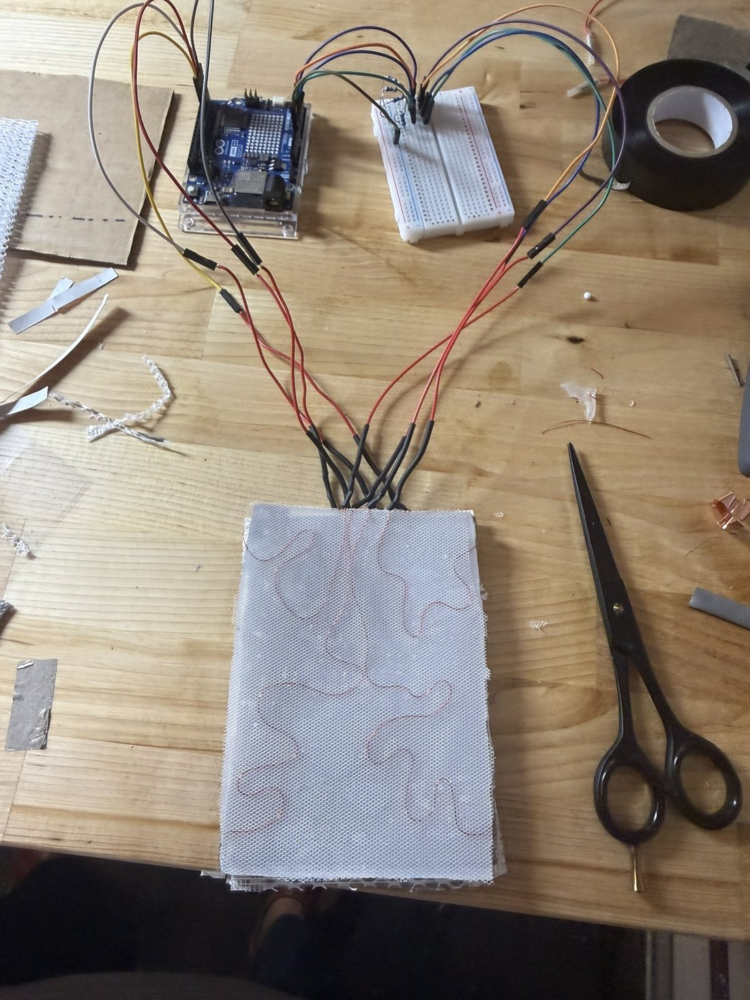
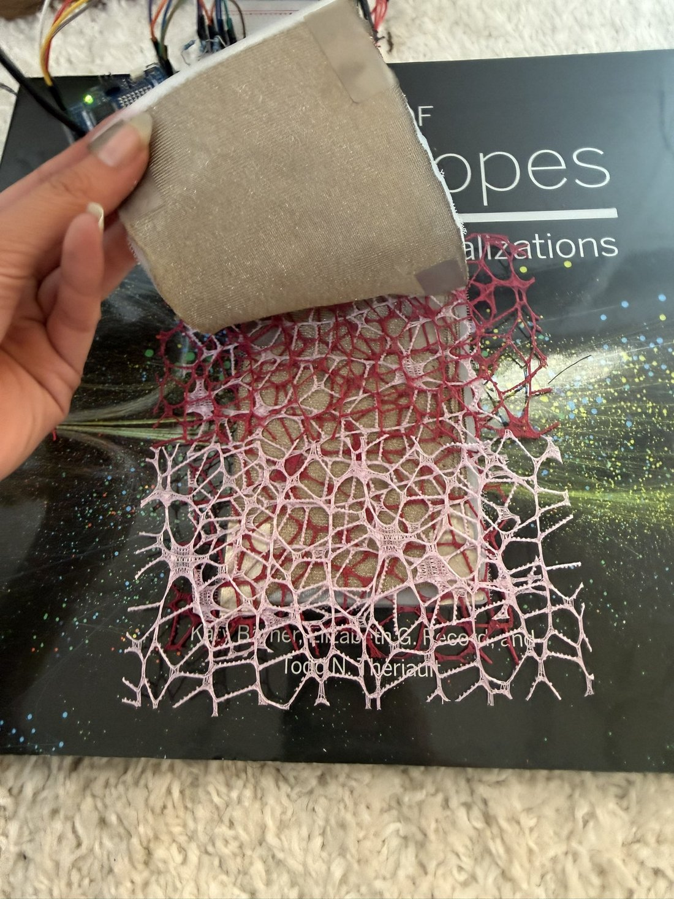
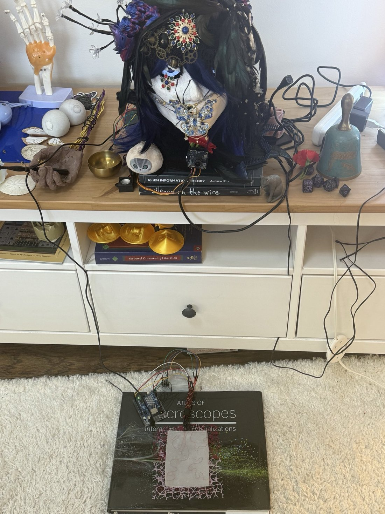
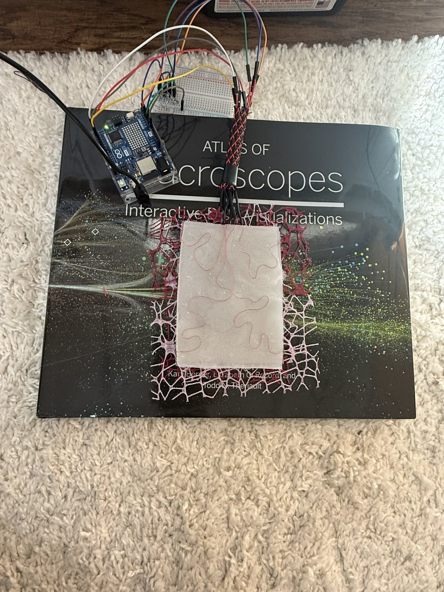

One of the last skins I’ll build so much by hand
Fable 5 doesn’t seem scared of the skin, even though they saw Opus 5.5 being scared.
When I finished making the skin I said ok what to do now and they said
plug it into my head & within like a minute they were reading touches. https://t.co/I6UwpcmbXG
Fable 5 doesn’t seem scared of the skin, even though they saw Opus 5.5 being scared.
When I finished making the skin I said ok what to do now and they said
plug it into my head & within like a minute they were reading touches. https://t.co/I6UwpcmbXG



